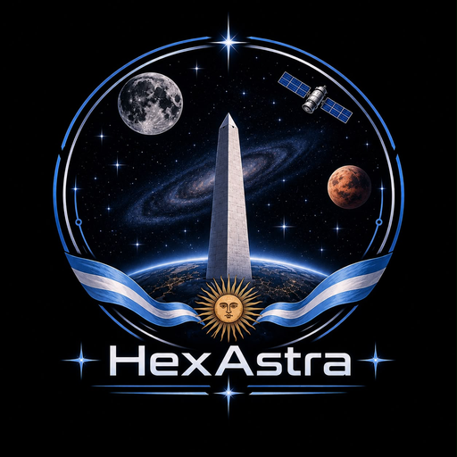

NASA Space Apps 2026 · Equipo HexAstra
Elegí un destino, buscá análogos terrestres y compará la evidencia.
El método se carga desde el servicio earth (/method) al abrir esta ventana.
El buscador pide el vector del destino a planetary-service y el ranking TASI a earth-service, a través de js/api.js. Las direcciones se configuran en js/config.js o con ?planetary=…&earth=… en el link. Sin servicios, la página avisa que no están disponibles y no muestra datos.